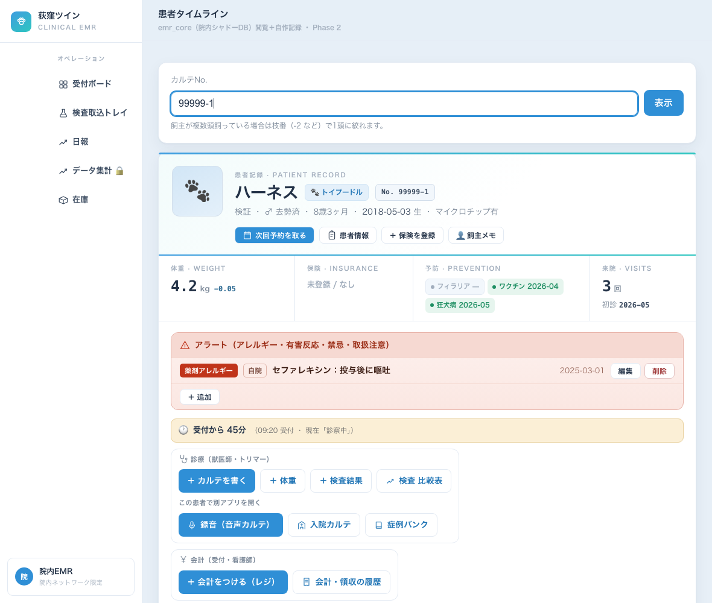
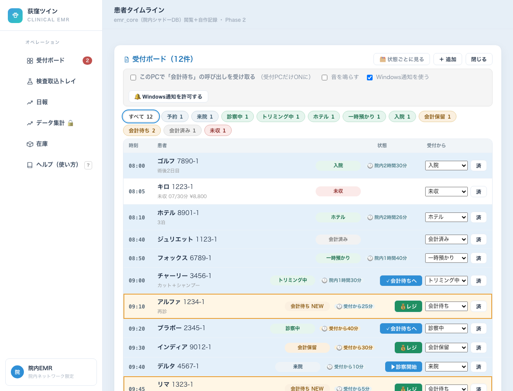
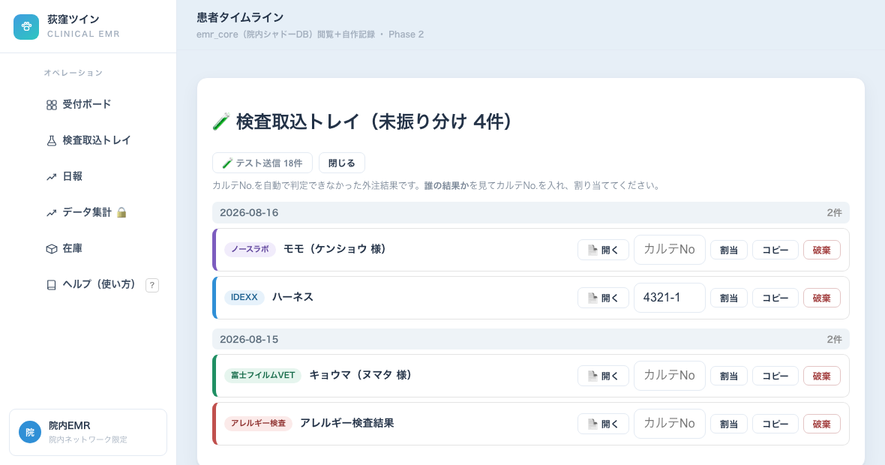
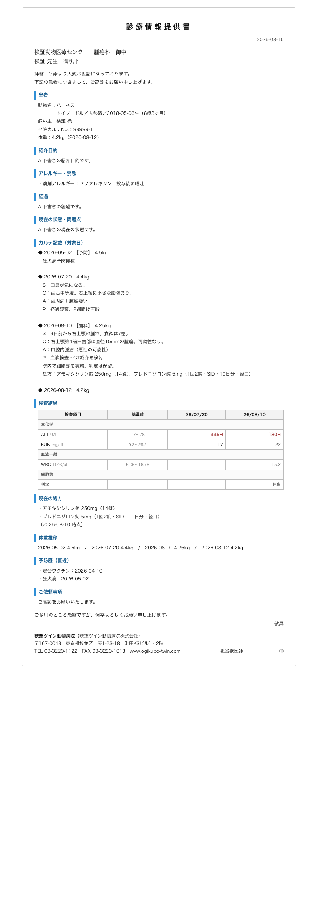
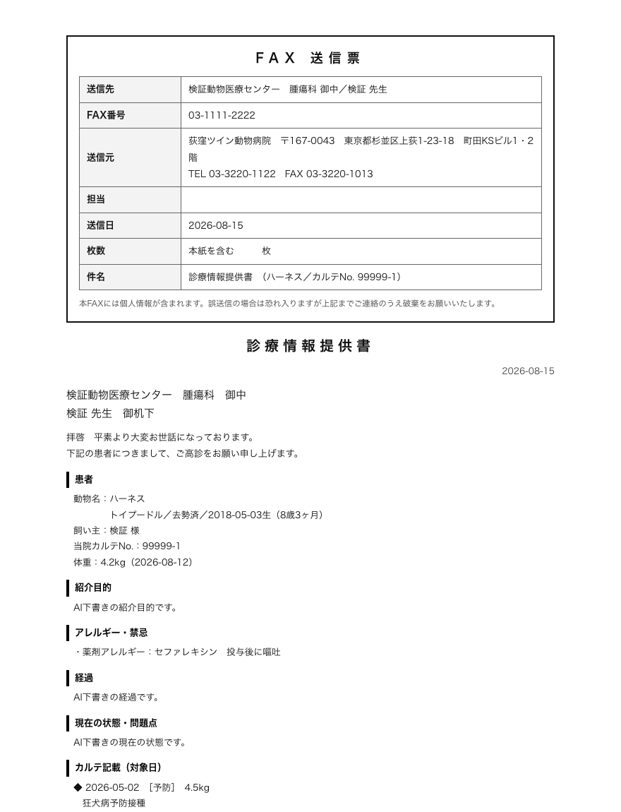

| どこで | アドレス | ひとこと |
|---|---|---|
| 受付PC | https://192.168.20.250:3801/ | 受付は必ずこちら。会計の呼び出し（Windows通知）が使えるのはこのアドレスだけです |
| 院内の他のPC・iPad | http://192.168.20.250:3800/ | 診察室・処置室はこちらで大丈夫です |
| 院外（自宅など） | https://serverpc.tail2de5bb.ts.net:8452/ | Tailscaleに入っている端末のみ。iPhoneで開けないときは http://100.111.66.29:3800/ |
パスコードは音声カルテ・症例バンクと同じものです。カルテNo.は 10000-2 のように、ハイフンの後ろが「その飼い主さまの何頭目か」です。1頭しかいなければ枝番なしでも出ます。

| 場所 | 何が出るか |
|---|---|
| いちばん上の帯 | 名前・品種・性別・年齢・カルテNo.・マイクロチップの有無 |
| その下の4つ | 体重（前回との差つき）・保険・予防（フィラリア／ワクチン／狂犬病の最終）・来院回数 |
| 赤い帯 | アラート＝薬剤アレルギー・有害反応・禁忌・🐾取扱注意（咬む・暴れる等）。触る前に必ず見てください |
| 黄色い帯 | 受付からの経過時間。30分を超えると黄、1時間を超えると赤になります |
| ボタンの3グループ | 診療（獣医師・トリマー）／会計（受付・看護師）／書類・出力 |
| その下 | 来院ごとの時系列。カルテ本文・検査値・体重・会計・画像が日付順に並びます |

左の受付ボードから開きます。今日の予約は朝、自動で並びます（再来機で受付すると自動で「来院」に進みます）。
ふだんは「1人1行」の一覧です。受付した時刻の順に上から並ぶので、誰がどの状態か、探す場所は1か所です。
| 列 | 内容 |
|---|---|
| 時刻 | 受付した時刻（まだ来ていない予約は予約時刻） |
| 患者 | 名前・カルテNo.・メモ |
| 状態 | 色つきの札。青灰＝待合／緑＝進行中／橙＝会計／灰＝終わり・赤＝未収 |
| 受付から | 経過時間（下記） |
| 操作 | 次に進めるボタン・💰レジ・状態の変更・済 |
いちばん上に すべて 12 診察中 1 会計待ち 2 … と件数が並びます。押すとその状態の人だけになります。もう一度「すべて」で戻ります。
右上の［🗂 状態ごとに見る］で、状態ごとの列に切り替わります。この設定はそのPCごとに覚えますので、好きな方で使ってください（［📋 一覧で見る］で戻ります）。
| 状態 | 出かた |
|---|---|
| 来院・診察中・会計待ち・会計保留 | 30分超で黄、1時間超で赤。お待たせしている子がひと目で分かります |
| トリミング中・ホテル・一時預かり・入院 | 「院内2時間30分」と色を付けずに表示（長くて当たり前なので、赤くすると本当に急ぐ人が埋もれるため） |
| 予約・会計済み・未収 | 出ません |
受付ボードの上に設定の帯があります。受付PCで1回チェックを入れるだけで、その後はずっと有効です。他のPCには一切出ません。
知らせは3つ同時に出ます。
| 出るもの | 説明 |
|---|---|
| 緑のカード | 画面の右上。押すまで消えません。［💰 レジを開く］を押すとその子の会計画面に直行します |
| Windows通知 | 画面の右下。Ahmicsを開いていても出ます（①のhttpsで開いて許可した場合のみ） |
| 左の赤い数字 | 「受付ボード ❷」＝いま会計待ちが2件。どの画面にいても見えます |
患者画面の［＋ 会計をつける（レジ）］、または受付ボードの［💰レジ］から。
外注に出した検査の結果はメールで届いたものが自動で取り込まれ、カルテNo.が分かるものはその子のカルテに自動で入ります。自動で判定できなかったものだけがこのトレイに残ります。

| やること | ボタン | ひとこと |
|---|---|---|
| カルテを書く | ＋ カルテを書く | 記載者を選び暗証番号を入れて保存。誰が書いたかが残ります |
| 録音して書く | 🎙 録音（音声カルテ） | その子の録音画面に直行します。マイクを使うのでhttpsで開きます |
| 体重 | ＋ 体重 | グラフに反映されます |
| 検査結果 | ＋ 検査結果 | 分類を選ぶと項目が出ます。単位と基準値は犬猫別に自動で入ります |
| 検査の推移を見る | 📈 検査 比較表 | 項目×日付の表。基準から外れた値に色が付きます |
| アレルギー等を登録 | アラート帯の＋追加 | 次に開いた人全員に赤帯で出ます |
| 飼い主メモ／ペットメモ | 👤飼主メモ | 「元々動物看護師」「人見知りが強い」など次に活きる背景。院内だけ・書類には出ません |
患者画面の［紹介状 / 診療情報提供書］から。まとめたい日を選ぶだけで、その日のカルテと検査結果が1通になります。
| ボタン | 出るもの | 使う場面 |
|---|---|---|
| 📄 清書 | きれいに組んだ紹介状 | 印刷して封筒で渡す／PDFで保存 |
| 📠 FAX | 1枚目＝FAX送信票、2枚目以降＝本文 | 印刷して複合機のFAXで送る |
| ✉️ メール | 件名＋本文（コピーボタンつき） | メールに貼り付けて送る |
| 🌐 Web貼り付け | 飾りのない素のテキスト | 先方の病院のWeb紹介状フォームに貼り付ける |


患者画面の［証明書］から、ワクチン接種証明書と狂犬病予防注射済証が出せます。接種日・ワクチン名・ロット番号・次回予定・獣医師名を入れて作成 → 印刷。写真を入れることもできます（その場で位置と大きさを調整できます）。
| 症状 | どうするか |
|---|---|
| 「該当患者が見つかりません」 | カルテNo.の桁を確認。枝番（-2 など）を外して試す |
| 「複数の患者が該当します」 | 同じ飼い主さまに複数頭。枝番を付けて指定してください |
| 会計の呼び出しが出ない | ①受付ボード上部のチェックが入っているか ②https://192.168.20.250:3801/ で開いているか ③ブラウザで通知を「許可」したか。なおすでに並んでいた子では鳴りません |
| 受付からの経過時間が出ない | その行がまだ「予約」のまま＝来院に進めていない可能性。ボードで「来院」に進めてください |
| 録音ボタンでマイクが使えない | httpで開いている可能性。https（:3801）で開き直してください |
| 画面が真っ白／表示が古い | いちど再読み込み（⌘R / Ctrl+R）。それでも直らなければ院長へ |
| 間違えて保存した | カルテ・体重・検査・会計は編集と削除ができます（記録は残ります）。分からなければ消さずに院長へ |